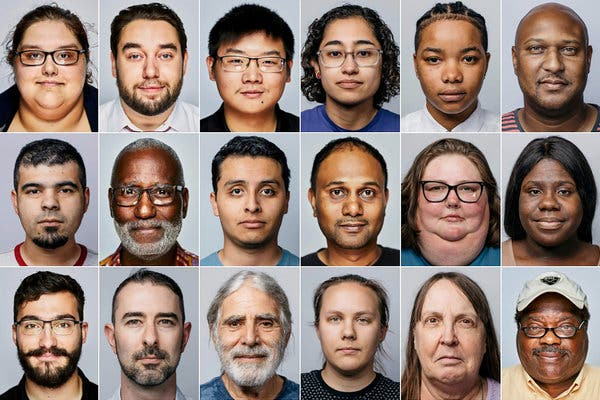
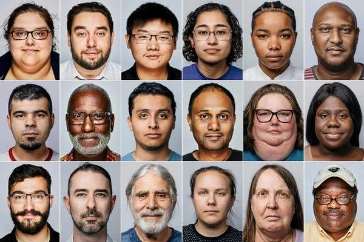
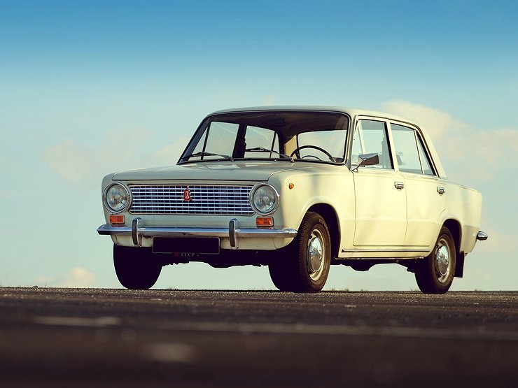
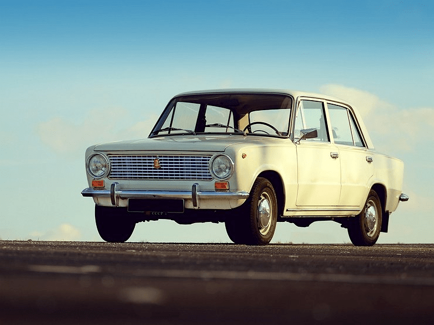
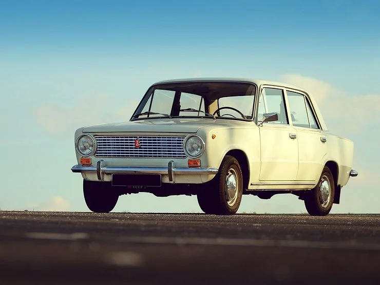

Прочитав про формат WebP решила начать с картинок с людьми и лицами, т.к. прочитала, что формат искажает лица и они становятся "пластиковыми".
Фото в формате jpeg:

И фото в формате WebP:

Даже при увеличении я не вижу никаких искажений. При условии, что в данном примере WebP весит больше jpeg.
Попробовала взять другое фото, сравнить jpeg, png и WebP соответственно.



Честно говоря, я не вижу различий в качестве. Возможно, они практически не видны на изображениях в хорошем качестве. Я даже взяла арт Рик и Морти png размером 7,2 МБ и сжала в WebP до 213 КБ и никаких
ухудшений не заметила. Взяла также дорожный знак и конвертировала в разные форматы. Ухудшения качества нет. Пока вижу в WebP
только плюсы в вопросах качества и размера. Из минусов объективно это то, что формат поддерживается только в браузерах Chrome, Opera и Firefox.